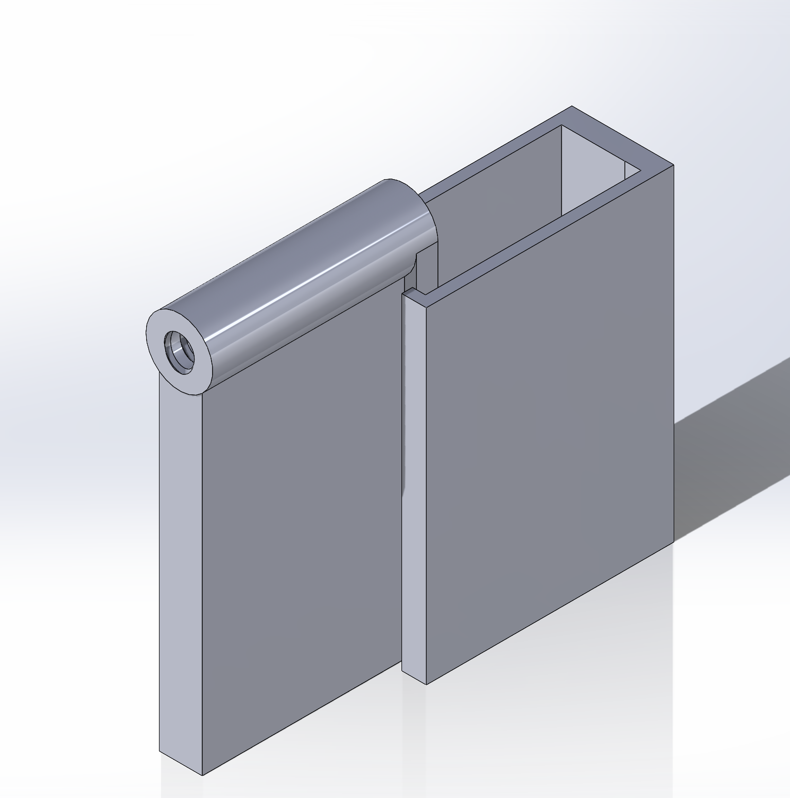

Installed XAMPP on ubuntu virtual machine. XAMPP was set to startup on boot
Installed STM32 cube IDE to program STM32F303RE for Project VI
Setup a local server that can be reached through localhost (on virtual machine) or IP address (when on same wifi network as host): 192.168.2.55.
The local server can be found in /var/www/html directory on the virtual machine. This is the default XAMPP deployment folder
Setup github connection with partner and was able to create a branch and merge with the main thread
Obtained contact information for partner and setup communication through discord server
Reviewed the wiring diagram for the elevator
Week 2
met with partner to discuss project in first project meeting
planned added feature for project
started rough 3D design of elevator door module
started flow chart for new code for elevator door modules and controls
discussed and agreed upon project plan with partner
modified project server to allow for both logbooks to be accessable on server in seperate links
started planning for braile buttons for the elevator controls
planned rough layout for the GUI for the elevator control scheme
completed weekly status report with partner
consulted with partner on testing plan and our ideas towards what needed to be tested
connected over to team project website hosted on the Rpi and verified that it worked
performed seventh commit to the project which added features including individual logbook pages and an added submenu
pushed seventh commit to the repository
created project plan page and basic project plan template. still have not populated it
Week 3
completed phase 1 of the Hal hand out on setting up the GPIO
met with partner and disscussed Debriefing 1 and made plans for how to improve
discussed plans for the button panel and decided that the physical button panel was something Jad would be handling himself
worked on implementing phase 2 of the gpio set up
worked on setting up css in class following demo
tested CAN GPIO stage 1 code and got it working
issue with the stage 1 code ended up being forgetting to hit resume after entering the debugger
begun working on stage 2 of the CAN GPIO code
pushed stage 1 code to the github
plan for next week is to work on the next stage of the code and set up the filters
also plan to implement code to call the elevator to each floor during the next week
Week 4
met with Jad on monday to discuss plans for project for this week
modified demo code to feature the external buttons and the different floors
got code to compile with the added features and tried to upload it to the nucleos on Tuesday
was able to upload the code to the top nucleo and the bottom 2 but the second from the top wouldn't connect to my computer
noticed the nucleo looked damaged so met with Dave and Jad on Wednesday to replace it.
week was not very productive on project as I am in the middle of a family emergancy
discovered I had not changed the ID from the supervisory controller ID and I made the change to correspond with the proper ID values for each floor node
Friday morning I learned that the RPi was giving a bunch of can errors. Dave was working on the elevator after that and at time of writing I am not sure what is wrong with the elevator
if possible going to try and upload the new code to the nucleos and test it using the blue buttons to see if the RPi keeps giving the error. another option would be to have a group with working code upload their code and see what happens
I have not heard from Jad since Wednesday and I am not sure what he has done and if any of it caused the issue
uploaded new code to elevator nucleos. currently only using blue button on each elevator.
went through arduino code to understand what was going on a bit more
realized issue with elevator was just the code not being correct for the nucleos
discussed with Jad all the work he did to the website
tested elevator to make sure the correct value was being displayed on the LCD
discussed the plans for the push buttons going forward.
going to continue to try and reflash the code for floor 3 to the third floor nucleo. as currently floor 3 goes to floor 2 and floor 2 goes to floor 3
Week 5
tested external buttons for each floor using the blue shield for the nucleo
discovered I had the buttons wrong, first I had the second floor and third floors reversed so I fixed that in the code.
also fixed the leds so they were all for the correct floors
discovered that the response time was not consistant for the buttons and sometimes the buttons take a while to respond
pushed updated nucleo code to the git so that it is
holding the buttons on the blue shield works better than just pressing them
helped record demo video of the elevator working with the external buttons
met with Jad to discuss all changes done to the project
Week 6
begun work on developing 3D assembly for door module
determined we would use a 2 segment door which would reduce the size of the overall unit when the door is open.
the inner of the 2 segments of the door will be connected to a lead screw which will move it along the door frame.
the outer segment will be pulled by a set of tongues on the back of the inner module, this will allow it to only be moved when the inner module pushes against it
at the moment the plan is to use a pair of limit switches to detect when the door is in the closed or open position.
when the door open limit switch is pressed, an interrupt will be triggered that will start a countdown, if a button is pressed then the door may close sooner, bt otherwise the door will remain open until the countdown is complete and after that the door will close and wait for another input
while the door is open floor requests will be stored in a queue or database waiting for the door to close for them to be processed
if one of the floor request buttons is pressed, the countdown will advance to 5 seconds and then the door will close allowing the elevator to go to that floor
will either use the RPi or the arduino to control the door motor
met with Jad to discuss all changes done to the project

Week 7
on tuesday I met with Jad to discuss the progress on the project. he had fixed the 2 broken buttons on the 2 blue boards but now we were having an issue where nothing was working
I looked at the CAN bus and found that the DB9 port for the arduino had broke and was not actually connected to the board.
Jad worked on replacing it and on friday when we got to work on it I found that one of the wires connected to the arduino was disconnected. I plugged it back in based on the wires from the next elevator
Worked more on design file for the door. added a frame and adjusted the tolerances so that the door will not get stuck but will also not rattle around
did not get as much done this week as I hoped because we had 2 midterms to study for
I am planning on continuing to work on project over reading week
over reading week I am planning on working on the wiring for the door module to enable it to work properly
Week 9
continued working on design for the opening elevator doors
decided to use the lead screw and Z axis components from an Ender 3 3D printer as the motor and controls for the opening and closing of the doors
I was going to use the limit switches and stepper motor circuitry from project 4 but because of how the floor nodes are set up I am going to need to set up a seperate limit switch circuit mounted on a bread board as a solution
I also plan on repurposing code used in project 4 and modifying it so that the door is controlled by the floor update signal sent to the car controller node.
did not get as much done this week as I hoped because we had 2 midterms to study for
the reason I need a new limit switch circuit is because PC5 is in use with the lights on the blue board, and it was also the pin used in the past for the limit switch. as such I am going to rebuild the circuit for it using spare parts and connect it to PC7
one of my ideas was to mount the limit switch under the door so that as the door closes it would close the switch. I decided against this as it would be easier to just mount them at the ends of travel as wiring and operation will be simpler
the last part of the design of the housing is including a mounting point for the motor, and working on the weight distribution as it is very front heavy
Week 10
Attempted printing door module but discovered I had made it too large for my printer. it originally would have been about 20cmx40cm in the base
Since that would be too large for my 30x30x30 cm printer, I decided to try cutting the frame in half. this did not work and the print failed early on
I did not get much time to work on it because I was studying for the math midterm but on Thursday night I scaled down the module so it would be printable
An unfortunate side effect of the scaling was that I didn't properly adjust some of the walls and I ended up with a 4cm thick wall in one spot
During the debriefing the print is almost done and should be done by 4 pm on June 12 2024
begun debugging the code and and set up GPIO pins for the 2 limit switches and the 4 pins for the stepper motor
Jad is sick this week so I have not had a chance to meet with him yet and see what he has done
Week 11
finished print for the elevator body
tested motor control for the stepper motor on the control boards
discovered connector issue with the stepper cable
tried printing door for the door module but it failed twice. going to attempt to print it again over the weekend
Jad did not show up for debriefing again this week so I am planning to work on getting as much as I can for phase 2 working as I can over the weekend and coming week
told Jad to push whatever he has done working or not to the Github in order to provide me with an update on where we are at
Scheduled to have a Zoom meeting with Jad on saturday so he can show what we have working
going to take what he has done and start working on it myself to try and get the rest done myself.
beginning to go over all the database stuff in order to get it all working on my own incase jad has nothing
Week 12
after last fridays debrief I tried contacting Jad to arrange a meeting between us so we could discuss where we were on the project
also insisted that he upload whatever he had to the github so I could see what we were working with
Saturday evening we were supposed to have a meeting to discuss it but Saturday morning Jad asked for it to be rescheduled to Sunday evening. I agreed and that evening he did help with the thermodynamics lab
Sunday we were supposed to have a meeting, Jad still had not sent any of his stuff from the past 2 weeks to me and I still had no idea if he had done anything. Sunday night he missed the meeting and asked to reschedule it to Monday morning
Monday morning Jad did not show up and when he replied to text messages he agreed to a Zoom meeting that evening. I scheduled the meeting right after and sent him periodic reminders all day but that evening at the time of the meeting he did not show and did not send a text to ask to reschedule.
after Jad did not show up I sent an email to Michael and Ali asking for a 1 week extension in order to give myself more time to work on the databases and finishing up phase 2
Tuesday morning I went in to begin working on the databases and to see if there was anything on the Rpi that could help
used Michael's example code as a start point and worked on getting it working so that I could control the database from the website
found one line of code 'if(authenticated) {...}' was supposed to be 'if(authenticated = TRUE) {...}' and once i fixed that the code worked and I was able to manipulate the database from the website
tested this by adding to the database on the website and in the terminal and it showed the added data on both ends.
I saw Jad in Advanced Math on Tuesday but we did not talk
Wednesday morning Ali emailed me approving my 1 week extension.
Saw Jad on Thursday in Advanced Math but at this point I was sure he had not done anything towards the project in phase 2 and was focused on working solo.
friday morning worked on fixing the CAN communication
I had narrowed the issue down to the CAN bus not making contact between the arduino and the Rpi
Michael jumped in to help and he discovered that there was an issue with the pcan driver on the Rpi
Michael reinstalled it and we tested it and found that it worked once the driver had been reinstalled
for next week
plan on doing the diagnostics and the sabath mode along with audio for the floor indicators, and also finishing up anything else for phase 2 and working on my door module as my added feature